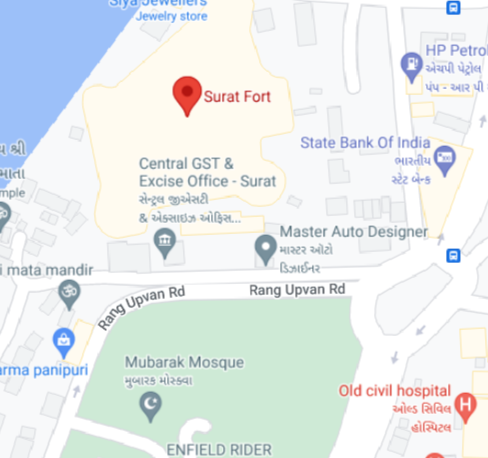

THE ROYAL ROUTE
Sarthana Nature Park
About Sarthana Nature Park
Sarthana Nature Park is a zoological garden located in Surat, Gujarat, India, owned and managed by Surat Municipal Corporation. This is the largest zoological garden of the state and one of the oldest zoological parks of Gujarat, spread over the 81 acres with river Tapi on the north side and Surat Kamrej road is on its south side.
How to Reach There
By Bus: Surat Taxi Fare from Surat to Nature Park and Zoo is ₹ 120. It usually takes 27 minutes to reach Nature Park and Zoo from Surat which are 12.223 Kms apart. Taxi fares in Surat are calculated based on the minimum fare and fare for the subsequent Kms.
By Train: Nearest Railway Station To Surat Fort is Surat Station which is situated at a distance of 8km and takes 15 min.
By Plane: Nearest airport to Sarthana National Park is Surat Airport which is situated at a distance of 13km. You can book a cab from here.

Book now
Copyright 2023 All Right Reserved By
THE ROYAL ROUTE